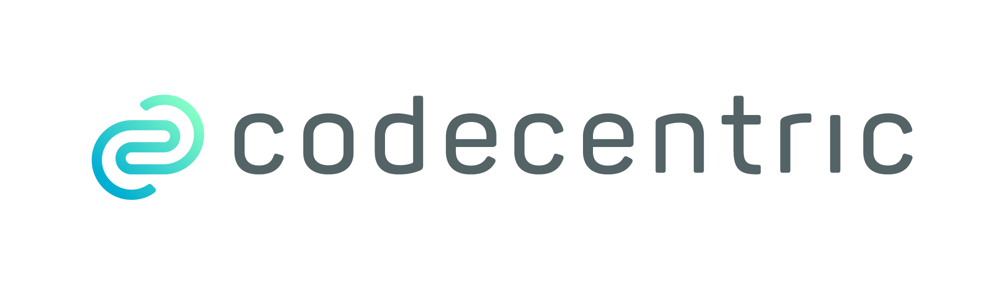

Companies using Apache PLC4X
The companies in the following list are actively using Apache PLC4X.
| Name | Market | Description | |
|---|---|---|---|

|
IT Consulting |
We develop software that solves real problems - and PLC4X solves the problem of IoT connectivity in a highly performant and open source way |
|
IoT / Software / Cloud |
We developed an open source gateway runtime and compatible cloud service to manage installations and collected information. We utilize PLC4X to gain access to data provided by industrial hardware. |
||
IIoT / Industry 4.0 |
In the End-2-End Industry 4.0 solution IndustryFusion we use PLC4X for brownfield-connectivity, i.e. the connectivity to existing machines on the shop floor. |
||
IIoT / Industry 4.0 / Research |
We use PLC4X for our research projects because of its great potential for retrofitting scenarios, the simplicity of the API, an active community for broad platform support and the open source flexibility. |
||
Automation / Drives / Industry 4.0 |
We used PLC4X to developed a solution to synchronize data between PLCs and customers systems. Our Solution is used for new products as well as for industry 4.0 upgrades to older machines. |
||
IIoT / Analytics |
We started a project which deals with long term data analysis; the data are gathered from machines controlled in real time by PLC. Failure prediction and behavioral working condition monitoring are the main goals. PLC4x library is a fundamental part of the process. |
||
(I)IoT / Industry 4.0 |
PLC4X is an important part of our platform Digital Cockpit which we develop in-house. |
||
Big Data / Analytics |
We use PLC4X to collect data from different types of PLCs as preliminary step for data analytics and visualization. |
||
Iot / Industry 4.0 / Data Science |
We developed a platform for IoT development and Data Science. We are using PLC4X to enable IoT devices in our platform to extract data from PLCs of different vendors, using different protocols. |
The people working on Apache PLC4X, and the companies behind them have put an enormous amount of effort into creating this great tool.
The problem some of them are facing, is that they are usually not allowed to mention which companies are using PLC4X.
However being able to name references is most vital nowdays in gaining trust.
So if you work for a company which is using Apache PLC4X, one way you can help the project is by admitting you are using it.
This might be only very little active contribution on your side, but for the project this is of extremely high value.
On this page we are maintaining a list of companies openly communicating that they are using Apache PLC4X.
If your company is using Apache PLC4X and you would like to give back to the community, please create a Pull-Request on github or post an email to dev@plc4x.apache.org and give us the permission to list your company.